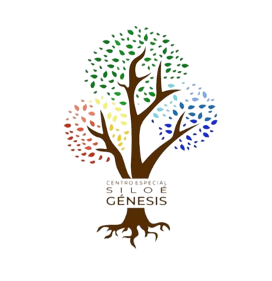

 Centro Especial Siloé Génesis
Sobre Nosotros
|
Somos una institución educativa de los niveles Inicial y lo que trabaja en Painabi base a la formación académica de estudiantes con diferentes discapacidades, convirtiéndolos en individuos con una vida productiva para la sociedad |
Convertirnos en la principal entidad educativa de servicios académicos dirigidos a estudiantes con discapacidades, con mayor calidad de aprendizaje del Municipio de Jarabacoa, a través de la implementación de estrategias y actividades, brindando un servicio que daria el mensaje de Jesucristo como base del crecimiento. |
Educamos en base a impulsar los valores del Plan Decenal 2008-2018 los cuales se resumen en el respeto a la vida, la solidaridad, la justicia, la verdad, la igualdad entre hombres y mujeres, el respeto a las diferencias individuales, la dignidad y los valores comunitarios. |
Discapacidades


• Sindrome de down
• Autismo
• Retraso Mental
• Déficit de atención
• Paralisis cerebral